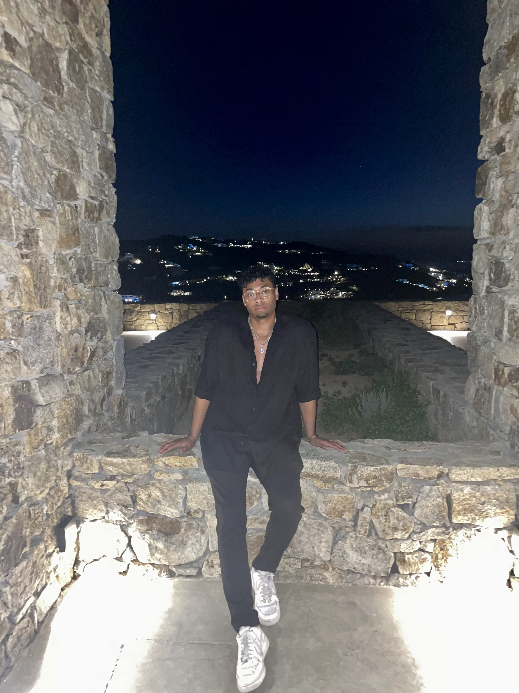

Umar Hussain
Awards
Hobbies

Professional summary
Dedicated, career-focused professional with expeirnce in sales and the real estate market. I have passion for
software development and have expeirnce with HTML,CSS,JavaScipt and Python.Currently seeking a Junior roles as
a softeare engineer to develope my skills and ultimately lead to a senior positon. I am a self-motivated and
enthusiastic individual skilled in working under pressure and adapting to new
situations and challenges.
Work Experience:
HomeMade propety - Sales Assoicate
07/2022 – 03/2023
- Conducted highquality property viewings for rental properties throughout London, both B2C and B2B.
- Negotiating and closing deals while managing client expectations
- Cold calling to generate leads.
- Running errands such as dropping off and picking up of keys.
The London independent Hospital - Senior Physiotherapy Assistant
01/2019 – 04/2022
- Helped physiotherapists keep up with scheduled appointments by completing physical and social evaluations of patients and interventions procedures
- Alleviated workload of physiotherapists by effectively managing over 5 patient treatment programs per day
Skills:
- Problem solver- Have effectively worked in a team and individually to find solutions to issues that have affected the department.
- Leadership- Have led a small team of assistants ensuring that tasks and projects are completed to a high standard
- Fast learner- Able to grasp new concepts and techniques quickly and implement them correctly
- Teamwork- Able to work well as part of a multidisciplinary team to meet targets and improve department efficiency.
- Communication – Effectively communicated with clients, landlords and other development managers.
- Networking- Able to speak to others confidently and build meaningful relationships
Education:
-
University of Sussex
Graduated: January 2019
Bachelor of Science Genetics
Awarded: 2.1,
-
Barking Abbey School
Graduated: July 2015
A-Levels: Applied Sciences (Biology, Chemistry, and Physics)
Distinction* Distinction Distinction
-
Barking Abbey School
Graduated: July 2013
10 GCSE's A-C (Including Math’s and English)